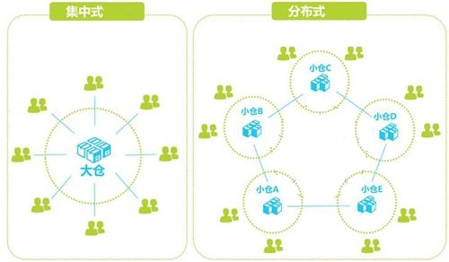
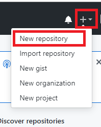
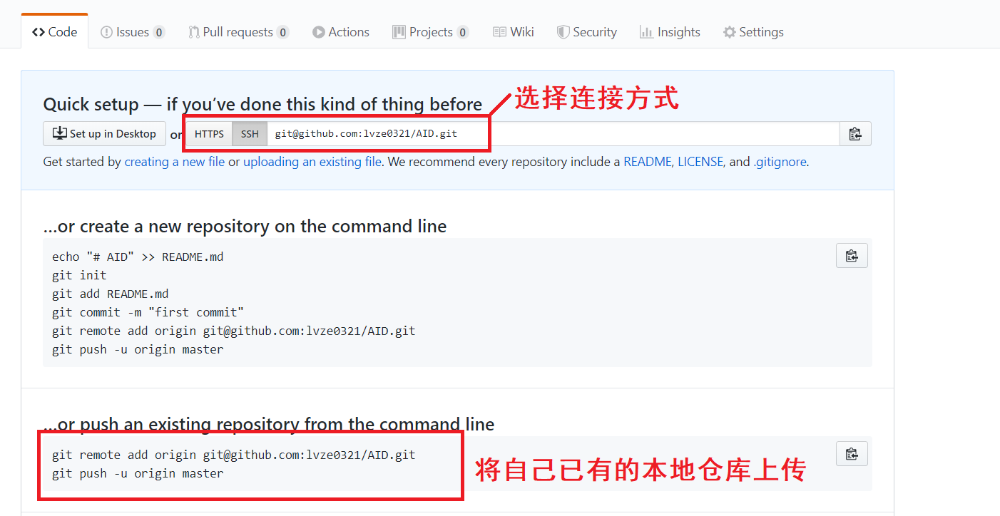
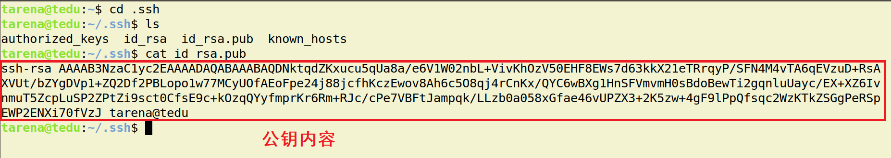
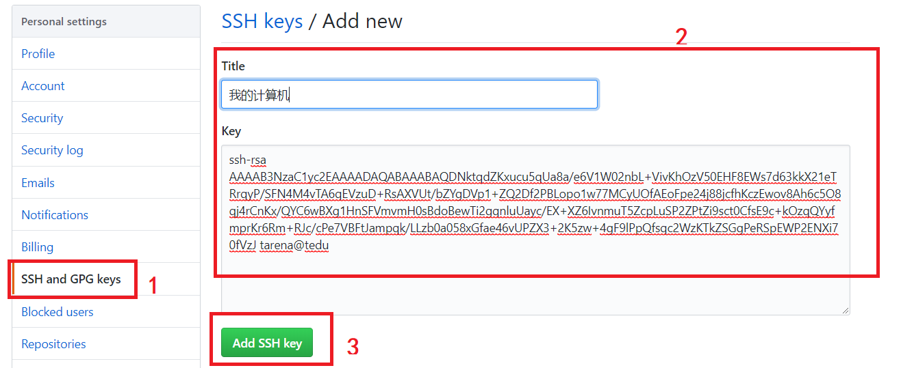
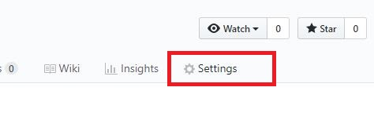
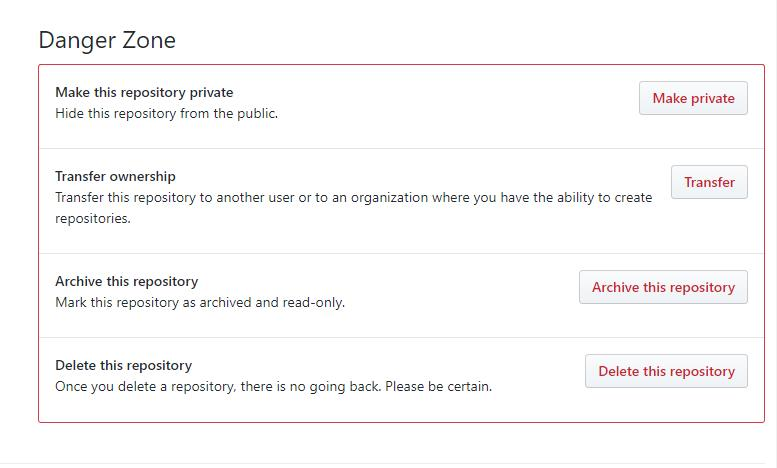

综合项目及工具
| Tedu Python 教学部 |
|---|
| Author：吕泽 |
综合项目及工具1. 软件项目开发1.1 软件项目开发流程1.2 开发注意事项1.3 项目管理工具2. GIT和GitHub2.1 GIT概述2.2 GIT使用2.2.1 初始配置2.2.2 基本命令2.3 版本控制2.4 保存工作区2.5 分支管理2.5.1 基本概念2.5.2 基本操作2.5.3 分支冲突问题2.6 GitHub使用2.6.1 获取项目2.6.2 创建自己的项目仓库2.6.3 远程仓库操作命令3. 综合项目案例3.1 在线词典
1. 软件项目开发
1.1 软件项目开发流程
需求分析 ----> 概要设计 ---> 项目计划 ----> 详细设计---> 编码测试 -----> 项目测试 ----> 调试修改 ---> 项目发布----> 后期维护
- 需求分析 ： 确定用户的真实需求
- 确定用户的真实需求，项目的基本功能
- 确定项目的整体难度和可行性分析
- 需求分析文档，用户确认
- 概要设计：对项目进行初步分析和整体设计
- 确定整体架构
- 进行技术可行性分析
- 确定技术整体思路和使用框架模型
- 形成概要文档指导开发流程

- 项目计划 ： 确定项目开发的时间轴和流程
- 确定开发工作的先后顺序
- 确定时间轴 ，事件里程碑
- 人员分工
- 形成甘特图和思维导图等辅助内容

- 详细设计 ： 项目的具体实现
1.形成详细设计文档 ： 思路，逻辑流程，功能说明，技术点说明，数据结构说明，代码说明
- 编码测试 ： 按照预定计划实现代码编写，并且做基本检测
- 代码编写
- 写测试程序
- 技术攻关
- 项目测试 ： 对项目按照功能进行测试
- 跨平台测试 ，使用测试
- 根据测试报告进行代码修改
- 完成测试报告
- 项目发布
1.项目交付用户进行发布
2.编写项目说明文档
- 后期维护
1.维护项目正常运转
2.进行项目的迭代升级
1.2 开发注意事项
- 按时完成项目工作和项目时间不足之间的冲突
- 项目实施人员之间的冲突
1.3 项目管理工具
- 编写文档： word ppt excel markdown LaTex
- 项目流程图 ： Mindmanager visio
- 项目管理 ： project
- 代码管理 ： svn git
2. GIT和GitHub
2.1 GIT概述
什么是GIT
GIT是一个开源的分布式版本控制系统，用于高效的管理各种大小项目和文件。
代码管理工具的用途
- 防止代码丢失，做备份
- 项目的版本管理和控制，可以通过设置节点进行跳转
- 建立各自的开发环境分支，互不影响，方便合并
- 在多终端开发时，方便代码的相互传输
GIT的特点
git是开源的，多在*nix下使用，可以管理各种文件
git是分布式的项目管理工具(SVN是集中式的)
git数据管理更多样化，分享速度快，数据安全
git 拥有更好的分支支持，方便多人协调

Linux下GIT安装
sudo apt install git
2.2 GIT使用

基本概念
- 工作区：项目所在操作目录，实际操作项目的区域
- 暂存区: 用于记录工作区的工作（修改）内容
- 仓库区: 用于备份工作区的内容
- 远程仓库: 远程主机上的GIT仓库
注意： 在本地仓库中，git总是希望工作区的内容与仓库区保持一致，而且只有仓库区的内容才能和其他远程仓库交互。
2.2.1 初始配置
- 配置命令： git config --global [选项]
- 配置文件位置: ~/.gitconfig
- 配置用户名
xxxxxxxxxxe.g. 将用户名设置为Tedusudo git config --global user.name Tedu
- 配置用户邮箱
xxxxxxxxxxe.g. 将邮箱设置为lvze@tedu.cngit config --global user.email lvze@tedu.cn
- 查看配置信息
xxxxxxxxxxgit config --list
注意： 该命令需要在某个git仓库下执行
2.2.2 基本命令
初始化仓库
xxxxxxxxxxgit init意义：将某个项目目录变为git操作目录，生成git本地仓库。即该项目目录可以使用git管理查看本地仓库状态
xxxxxxxxxxgit status说明: 初始化仓库后默认工作在master分支，当工作区与仓库区不一致时会有提示。将工作内容记录到暂存区
xgit add [files..]e.g. 将文件 a ，b 记录到暂存区git add a be.g. 将所有文件（不包含隐藏文件）记录到暂存区git add *
取消文件暂存记录
xxxxxxxxxxgit rm --cached [file]设置忽略文件
在GIT项目中可以在项目根目录添加.gitignore文件的方式，规定相应的忽略规则，用来管理当前项目中的文件的忽略行为。.gitignore 文件是可以提交到公有仓库中，这就为该项目下的所有开发者都共享一套定义好的忽略规则。在.gitignore 文件中，遵循相应的语法，在每一行指定一个忽略规则。
xxxxxxxxxx.gitignore忽略规则简单说明file 表示忽略file文件*.a 表示忽略所有 .a 结尾的文件!lib.a 表示但lib.a除外build/ 表示忽略 build/目录下的所有文件，过滤整个build文件夹；将文件同步到本地仓库
xxxxxxxxxxgit commit [file] -m [message]说明: -m表示添加一些同步信息，表达同步内容,不加file表示同步所有暂存记录的文件e.g. 将暂存区所有记录同步到仓库区git commit -m 'add files'
查看commit 日志记录
xxxxxxxxxxgit loggit log --pretty=oneline将暂存区或者某个commit点文件恢复到工作区
xxxxxxxxxxgit checkout [commit] -- [file]e.g. 将a.jpg文件恢复,不写commit表示恢复最新保存的文件内容git checkout -- a.jpg移动或者删除文件
xxxxxxxxxxgit mv [file] [path]git rm [files]注意: 这两个操作会修改工作区内容，同时将操作记录提交到暂存区。
2.3 版本控制
退回到上一个commit节点
xxxxxxxxxxgit reset --hard HEAD^说明： 一个^表示回退1个版本，依次类推。当版本回退之后工作区会自动和当前commit版本保持一致退回到指定的commit_id节点
xxxxxxxxxxgit reset --hard [commit_id]查看所有操作记录
xxxxxxxxxxgit reflog注意:最上面的为最新记录，可以利用commit_id去往任何操作位置创建标签
标签: 在项目的重要commit位置添加快照，保存当时的工作状态，一般用于版本的迭代。
xxxxxxxxxxgit tag [tag_name] [commit_id] -m [message]说明: commit_id可以不写则默认标签表示最新的commit_id位置，message也可以不写，但是最好添加。e.g. 在最新的commit处添加标签v1.0git tag v1.0 -m '版本1'
查看标签
xxxxxxxxxxgit tag 查看标签列表git show [tag_name] 查看标签详细信息
- 去往某个标签节点
xxxxxxxxxxgit reset --hard [tag]
- 删除标签
xxxxxxxxxxgit tag -d [tag]
2.4 保存工作区
保存工作区内容
xxxxxxxxxxgit stash save [message]说明: 将工作区未提交的修改封存，让工作区回到修改前的状态查看工作区列表
xxxxxxxxxxgit stash list说明:最新保存的工作区在最上面应用某个工作区
xxxxxxxxxxgit stash apply [stash@{n}]删除工作区
xxxxxxxxxxgit stash drop [stash@{n}] 删除某一个工作区git stash clear 删除所有保存的工作区
2.5 分支管理
2.5.1 基本概念
定义: 分支即每个人在原有代码（分支）的基础上建立自己的工作环境，完成单独开发，之后再向主分支统一合并工作内容。
好处
各自开发互不干扰
防止误操作对其他开发者的影响

2.5.2 基本操作
查看现有分支
xxxxxxxxxxgit branch说明: 前面带 * 的分支表示当前工作分支创建分支
xxxxxxxxxxgit branch [branch_name]说明: 基于a分支创建b分支，此时b分支会拥有a分支全部内容。在创建b分支时最好保持a分支"干净"状态。切换工作分支
xxxxxxxxxxgit checkout [branch]说明: 2,3可以同时操作，即创建并切换分支注意： git checkout -b [branch_name] 可以同时完成创建分支和切换分支的工作
合并分支
xxxxxxxxxxgit merge [branch]注意：分支的合并一般都是子分支向父分支中合并
删除分支
xxxxxxxxxxgit branch -d [branch] 删除分支git branch -D [branch] 删除没有被合并的分支
2.5.3 分支冲突问题
定义： 当分支合并时，原来的父分支发生了变化，在合并过程中就会产生冲突问题，这是合并分支过程中最为棘手的问题。
冲突情形1—— 原来的分支增加了新文件或者原有文件发生了变化
此时合并可能会出现:

此时只要先摁 ctrl-o 写入，然后回车，再摁ctrl-x 离开就可以了。
也可能出现提示让直行commit合并，那么此时只需要直行commit操作就可以了。这种冲突比较好解决。
冲突情形2—— 子分支和父分支修改了相同的文件
此时会出现：

这种冲突不太好解决需要自己进入文件进行修改后，再直行add ，commit操作提交
总结
- 尽量在项目中降低耦合度，不同的分支只编写自己的模块。
- 如果必须修改原来父级分支的文件内容，那么做好分工，不要让多个分支都修改同一个文件。
2.6 GitHub使用
远程仓库
远程主机上的GIT仓库。实际上git是分布式结构，每台主机的git仓库结构类似，只是把别人主机上的git仓库称为远程仓库。GitHub可以帮助我们建立一个远程仓库。
GitHub介绍
GitHub是一个开源的项目社区网站，拥有全球最多的开源项目。开发者通过可以注册网站账户，在GitHub建立自己的项目仓库（我们可以视作一个远程仓库）,GitHub规定GIT为它的唯一代码管理工具。
GitHub网址：github.com
2.6.1 获取项目
- 在左上角搜索栏搜索想要的获取的项目

- 选择项目后复制项目git地址

- 在本地使用git clone方法即可获取
xxxxxxxxxxgit clone https://github.com/xxxxxxxxx
注意:
- 获取到本地的项目会自动和GitHub远程仓库建立连接。且获取的项目本身也是个git项目。
- GitHub提供两种地址链接方式，http方式和SSH方式。通常访问自己的项目可以使用SSH方式，clone别人的项目使用http方式。
2.6.2 创建自己的项目仓库
- 点击右上角加号下拉菜单，选择新的仓库

填写相应的项目信息即可

github仓库相对本地主机就是一个远程仓库通过remote连接

使用https链接
xxxxxxxxxx# 后续操作每次上传内容都需要输入密码，比较麻烦，一般用于临时计算机的连接使用git remote add origin https://github.com/xxxxxxxxx使用SSH连接
xxxxxxxxxx# 先建立秘钥信任1. 将自己要连接github的计算机的ssh公钥内容复制2. github上选择头像下拉菜单，settings-》SSH and GPG keys-》new SSH key
- 将公钥内容添加进去，并且起一个标题名字，点击添加


xxxxxxxxxx#后续无需输入密码，一般用于自己信任的计算机git remote add origin git@github.com:lvze0321/AID.git查看连接的远程仓库名称
xxxxxxxxxxgit remote断开远程仓库连接
xxxxxxxxxxgit remote rm [origin]如果是自己的仓库需要删除，则选择自己的仓库选择settings，在最后可以选择删除仓库。
 
2.6.3 远程仓库操作命令
将本地分支推送给远程仓库
xxxxxxxxxx# 将master分支推送给origin主机远程仓库，第一次推送分支使用-u表示与远程对应分支 建立自动关联git push -u origin mastergit push origin [:branch] # 删除向远程仓库推送的分支推送代码到远程仓库
# 如果本地的代码有修改项推送给远程仓库 git push
推送标签
git push origin [tag] 推送一个本地标签到远程 git push origin --tags 推送所有本地所有标签到远程 git push origin --delete tag [tagname] 删除向远程仓库推送的标签
推送旧的版本
# 用于本地版本比远程版本旧时强行推送本地版本 git push --force origin
从远程获取代码
git pull
3. 综合项目案例
3.1 在线词典
- 功能说明
用户可以登录和注册
xxxxxxxxxx* 登录凭借用户名和密码登录* 注册要求用户必须填写用户名，密码，其他内容自定* 用户名要求不能重复* 要求用户信息能够长期保存
可以通过基本的图形界面print以提示客户端输入。
xxxxxxxxxx* 程序分为服务端和客户端两部分* 客户端通过print打印简单界面输入命令发起请求* 服务端主要负责逻辑数据处理* 启动服务端后应该能满足多个客户端同时操作
客户端启动后即进入一级界面，包含如下功能：登录 注册 退出
xxxxxxxxxx* 退出后即退出该软件* 登录成功即进入二级界面，失败回到一级界面* 注册成功可以回到一级界面继续登录，也可以直接用注册用户进入二级界面
用户登录后进入二级界面，功能如下：查单词 历史记录 注销
xxxxxxxxxx* 选择注销则回到一级界面* 查单词：循环输入单词，得到单词解释，输入特殊符号退出单词查询状态* 历史记录：查询当前用户的查词记录，要求记录包含name word time。前10条即可。